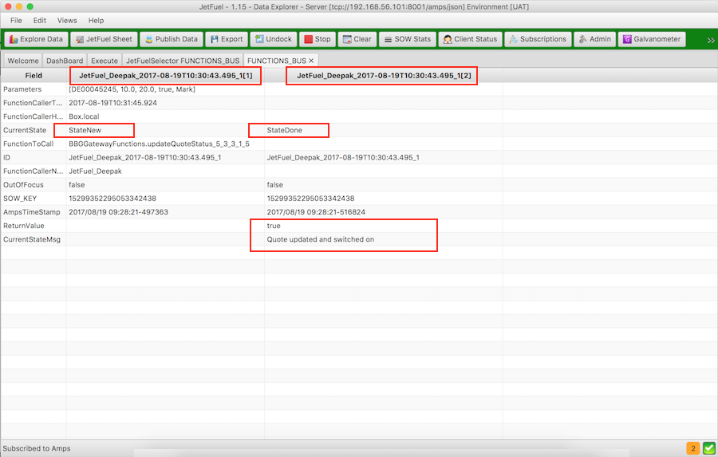

JetFuel Home
Deepak Dhayatker - (deepakcdo@gmail.com)
JetFuel - Execute
This library allows super fast, fully audited Remote Procedure Call (RPC) over a fast journaled bus.So we have
JetFuelExecute Publisher - This will connect to the bus and publish one or more functions. And then will wait for clients to call it. Once a client calls this function it will process it and send a response.
JetFuelExecute Caller - This will call one of the functions published by setting the function name and parameters. It will then wait for a response.
The journaled bus allows users to track every function call and its response. In brief it allows any component to publish a function on the message bus and any client connected to bus to call the function and get return value.
This is an extremely flexible model as new components that publish different functions can easily be added or removed. The function describes the list of parameter it takes and the return type.
You can test the functions in JetFuel Explorer. Testing functions through the JetFuel Explorer is very useful feature in development and support lifecycles. You can also display full audit trail of the function call which is extremly useful in debugging an issue.
Displaying available functions on the bus

Displaying test functionality

Displaying audit ability
Here the first message is the request and second is a response
Example of publishing a function in Java
Publishing a function is very easy and is done via spring config. You
just declare the function name, description, the parameters and the
class that will execute the function class. Currently only Java api is available but adapters for other languages can be built easily.
Additional Functionality in JetFuel
Apart from awesome flexiblity of just publishing and calling remote fucntion with full audit JetFuel Execute also provides these extra features- Apart from awesome flexibility of just publishing and calling remote function with full audit JetFuel Execute also provides these extra feature
- Automatic timeout response if the publishing server goes down so you client is not waiting for ever.
- Removal of published functions if the publisher that published it disconnects. So client always knows what functions are really available.
- Ability to handle client failure. e.g. if a client calls function QuoteOn and then disconnects after a few minutes the function publisher will pick this up and execute a clean up action. Here a clean up action could pull all the quotes from the market for the disconnected user.
- Ability to make a function call which is executed by several publishers. e.g. if you have BankOff function published by 5 different gateways, you can call this once and each of the 5 publisher will execute this. This is very powerful feature and needs to be understood and used very carefully.